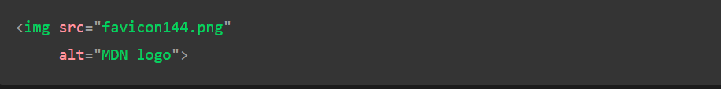

HTML Images
In this article, we will know the HTML Image, how to add the image in HTML, along with knowing its implementation & usage through the examples. In earlier times, the web pages only contains textual contents, which made them appear quite boring and uninteresting. Fortunately, it wasn’t long enough that the ability to embed images on web pages was added for users. In this article, we will know how to add images to the web page that will make the website attractive & various methods to insert the images.
There are 2 ways to insert the images into a webpage:
1.
By providing a full path or address (URL) to access an internet file.
2. By providing the file path relative to the location of the current web page file.
We will first discuss inserting the image to the webpage & simultaneously, we will understand both the above approaches.
Adding images on a webpage: The "img" tag is used to add or embed the images to a webpage/website. The “img” tag is an empty tag, which means it can contain only a list of attributes and it has no closing tag. The addition of the images improves the quality along with enhancing the design structure, appearance of the webpage. Nowadays, a website does not directly add images to a web page, as the images are linked to web pages by using the "img" tag which holds space for the image.
Syntax:

Image Attributes
Attribute: The "img" tag has following attributes:
src: It is used to specify the path to the image.
alt: It is used to specify an alternate text for the image. It is useful as it informs the user about what the image means and also due to any network issue if the image cannot be displayed then this alternate text will be displayed.
crossorigin: It is used to import images from third-party sites that allow cross-origin access to be used with canvas.
height: It is used to specify the height of the image.
width: It is used to specify the width of the image.
ismap: It is used to specify an image as a server-side image map.
sizes: It is used to specify image sizes for different page layouts.
usemap: It is used to specify an image as a client-side image map.

Setting style to the Image
1. Border: this example, we are using the border property to decorate the image. By default, every picture has a border around it. By using the border attribute, the thickness of the border can be changed. A thickness of “0” means that there will be no border around the picture.
2. Aligning an Image: By default, an image is aligned on the left side of the page, but it can be aligned to the centre or right using the align attribute.